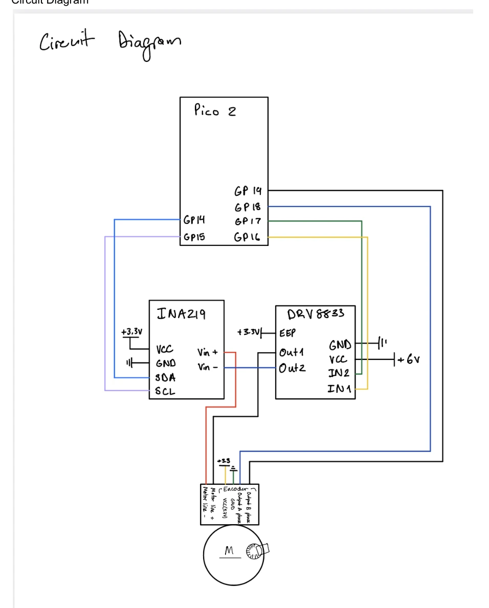
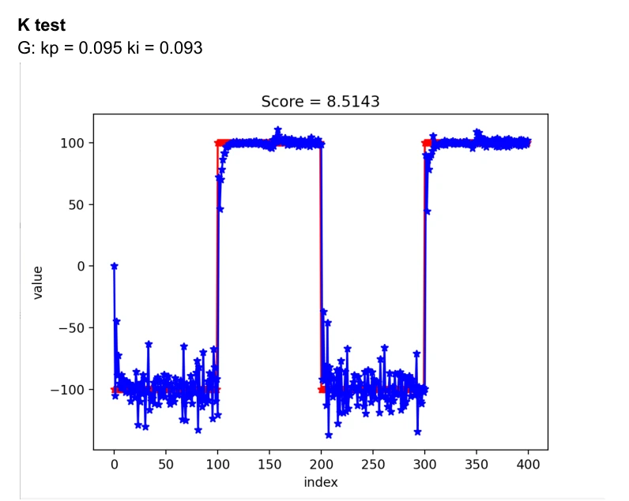
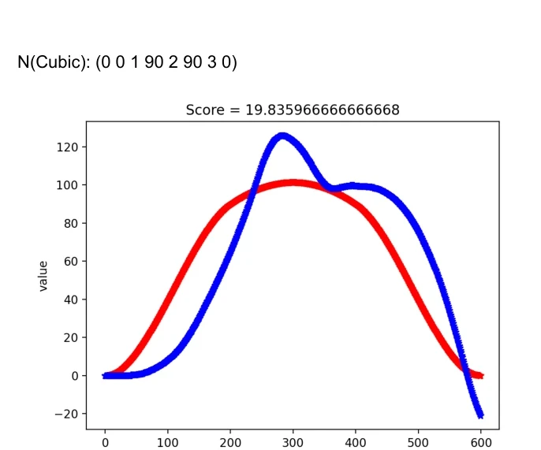
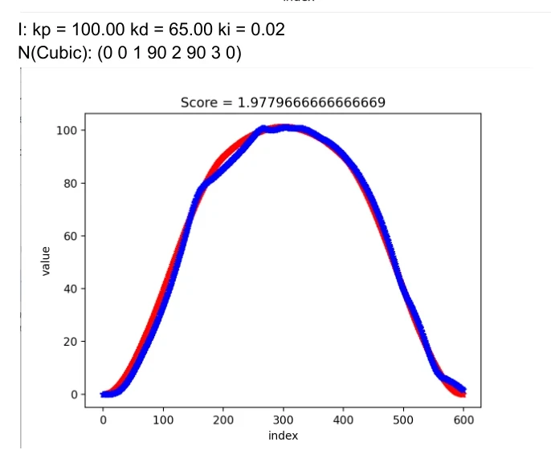
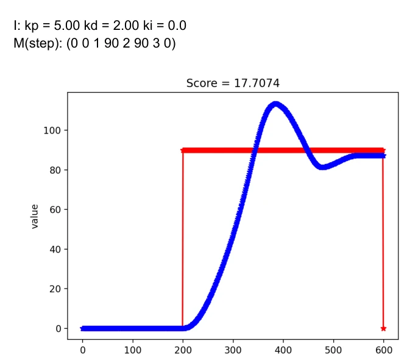
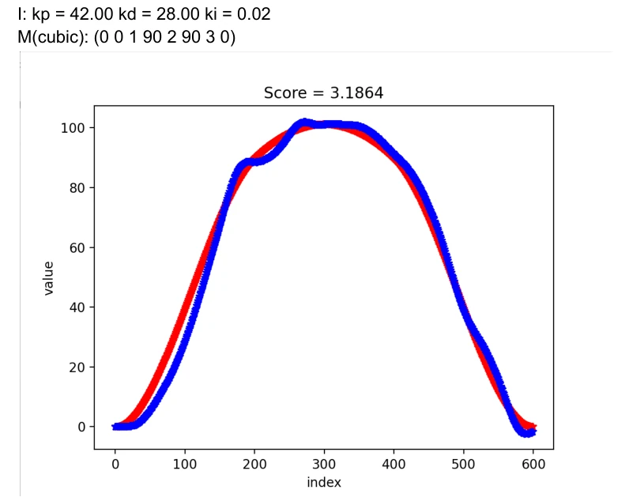

01Overview
The goal was to make a DC motor follow a commanded angle trajectory accurately. Motor torque is proportional to current, so the controller is split in two: an inner loop regulates motor current (torque), and an outer loop decides what current is needed to reach the desired angle.
Everything runs on the Pico 2 using hardware-timer interrupts. A menu-driven Python client on the laptop talks to the board over USB serial. It sets gains, loads step or cubic trajectories, runs tests and plots the reference against the measured response with a score (mean absolute error).
02Hardware
- Pico 2Runs both control loops and the serial command interface
- DRV8833 H-bridgeTwo PWM channels (GP16/GP17) set direction and duty cycle
- INA219I²C current sensor in series with the motor (GP14/GP15)
- Encoder334 PPR × 4 quadrature = 1336 counts/rev (GP18/GP19)

03Control architecture
The firmware is a state machine (IDLE → PWM → ITEST → HOLD → TRACK) driven by two repeating timers:
- Current loop (1 kHz). Reads the INA219, computes
u = Kp·e + Ki·Σe, clamps it to ±100% duty and sets the H-bridge PWM. - Position loop (200 Hz). Converts encoder counts to degrees, runs PID against the next trajectory point and outputs the desired current for the inner loop. The D-term acts on the measured angle instead of the error, which avoids derivative kick on step inputs.
- Logging. Desired and actual values go into arrays during a run and are streamed back to Python afterwards, so serial I/O never interrupts the control timing.

04Tuning & results
With the current loop working, I tuned the position gains on step and cubic trajectories (0° → 90° → hold → 0° over 3 s). The score is the mean absolute error in degrees.
Before → after (drag the slider)


Red = reference, blue = measured angle. Both images use the same trajectory.
Step response
Step inputs showed the trade-off clearly. Low gains (Kp 5, Kd 2) gave a slow rise and about 25% overshoot. Raising Kp without enough damping made the overshoot worse. Increasing Kd together with Kp is what finally removed the oscillation on the cubic trajectory.


05Try it: PID playground
This runs a simplified motor model in your browser using the same control law as my firmware. Move the sliders and the response updates live. The presets use the gains I tested on the real motor.
Position loop simulator
The model uses a first-order current loop, viscous damping and Coulomb friction, with constants fit to match the trends I measured. It's for intuition, not exact numbers.
06Code
Firmware in C (Pico SDK) and the Python serial client. The highlighted excerpts are the two control-loop interrupt handlers.
07Takeaways
- Tune from the inside out. The position loop only worked well after the current loop was fast and accurate.
- Damping matters as much as stiffness. Increasing Kd along with Kp brought the error from 19.8° down to 1.98°.
- Log first, transmit later. Buffering data in arrays kept serial communication from disturbing the 1 kHz loop timing.
- Next time: I'd add integrator anti-windup, filter the derivative term, and add feedforward from the trajectory velocity.